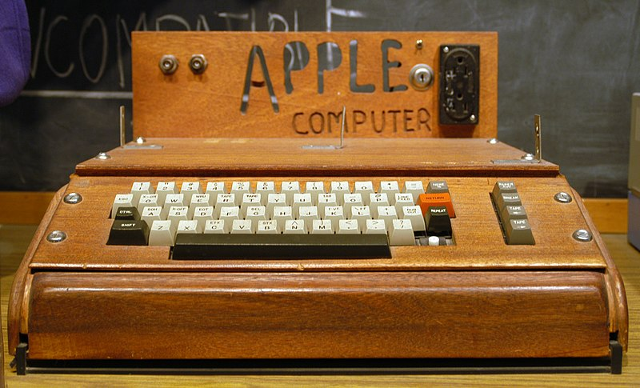
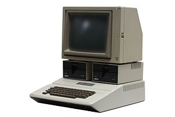

A brief history of Apple products
A few facts about the Apple I
The Apple Computer 1, originally released as the Apple Computer and known later as the Apple I, or Apple-1, is a desktop computer released by the Apple Computer Company (now Apple Inc.) in 1976. It was designed by Steve Wozniak. The idea of selling the computer came from Wozniak's friend and co-founder Steve Jobs. The Apple I was Apple's first product, and to finance its creation, Jobs sold his only motorized means of transportation, a VW Microbus, for a few hundred dollars (Wozniak later said that Jobs planned instead to use his bicycle to get around), and Wozniak sold his HP-65 calculator for $500. Wozniak demonstrated the first prototype in July 1976 at the Homebrew Computer Club in Palo Alto, California.
A few facts about the Apple I
- An Apple I reportedly sold for US$50,000 at auction in 1999.
- CA unit was sold in September 2009 for $17,480 on eBay
- The Apple I's built-in computer terminal computer terminal circuitry was distinctive. All one needed was a keyboard and a television set.
- Production was discontinued on September 30, 1977, after the June 10, 1977 introduction of its successor, the Apple II.
Apple II: Computers for everyone
The Apple II (stylized as apple ][) is an 8-bit home computer and one of the world's first highly successful mass-produced microcomputer products. It was designed primarily by Steve Wozniak; Steve Jobs oversaw the development of Apple II's foam-molded plastic case and Rod Holt developed the switching power supply. It was introduced by Jobs and Wozniak at the 1977 West Coast Computer Faire, and marks Apple's first launch of a personal computer aimed at a consumer market—branded toward American households rather than businessmen or computer hobbyists.
Apple II Series
| Variants | Characteristics | Production Date | Original Price |
|---|---|---|---|
| Apple II | microprocessor running at 1.023 MHz, 4 KB of RAM, an audio cassette interface for loading programs and storing data, and the Integer BASIC programming language built into the ROMs. | 06/1977 | US$1,298 |
| Apple II Plus | Included the Applesoft BASIC (This Microsoft-authored dialect of BASIC) programming language in ROM. Supported floating-point arithmetic, and became the standard BASIC dialect on the Apple II series. | 06/1979 | US$1,195 |
| Apple IIe | A cost-reduced yet more powerful machine that used newer chips to reduce the component count and add new features, such as the display of upper and lowercase letters and a standard 64 KB of RAM. | 01/1983 | US$1,395 |